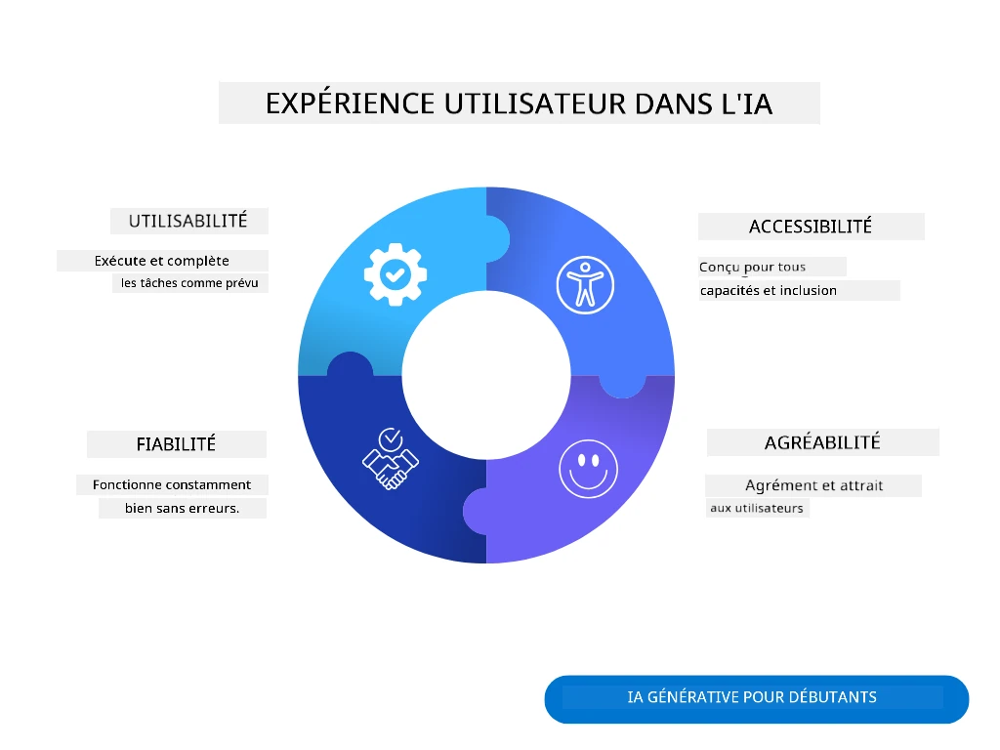
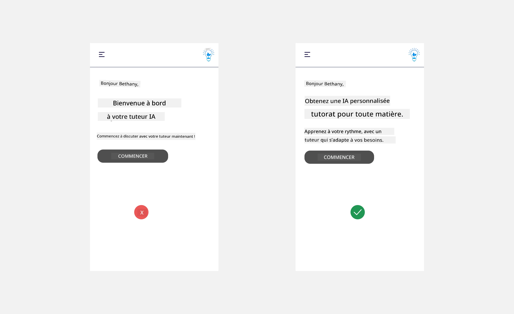
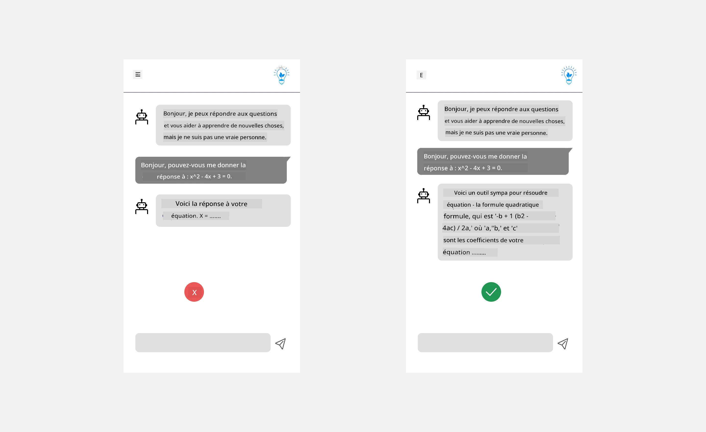
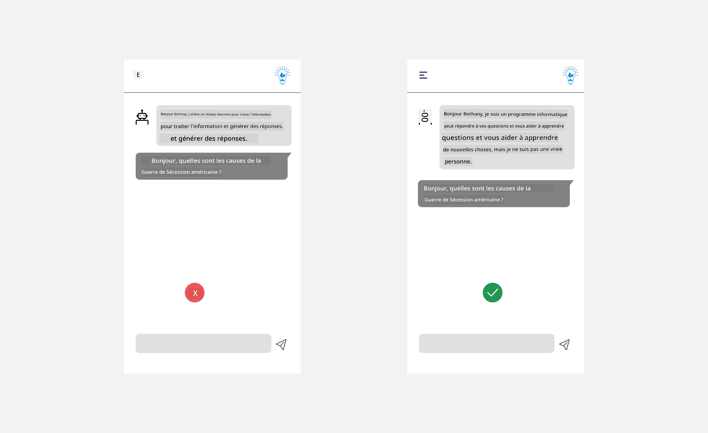
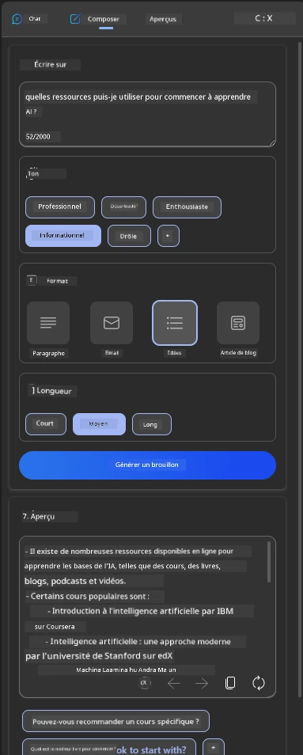
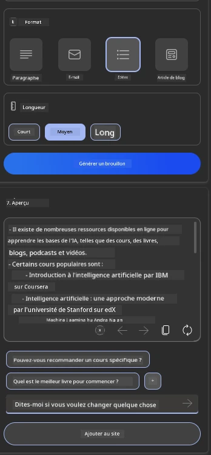
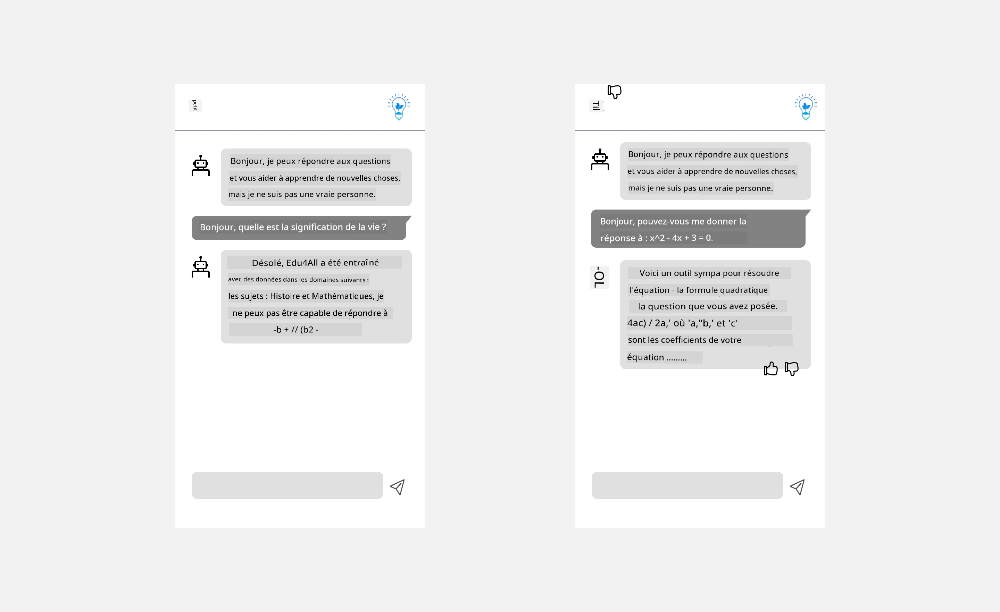

Concevoir l'expérience utilisateur pour les applications d'IA#
(Cliquez sur l'image ci-dessus pour visionner la vidéo de cette leçon)
L'expérience utilisateur est un aspect très important dans la création d'applications. Les utilisateurs doivent pouvoir utiliser votre application de manière efficace pour accomplir leurs tâches. Être efficace est une chose, mais il est également nécessaire de concevoir des applications accessibles à tous, afin de les rendre inclusives. Ce chapitre se concentre sur cet aspect pour vous aider à concevoir une application que les gens peuvent et veulent utiliser.
Introduction#
L'expérience utilisateur correspond à la manière dont un utilisateur interagit avec et utilise un produit ou un service spécifique, qu'il s'agisse d'un système, d'un outil ou d'un design. Lors du développement d'applications d'IA, les développeurs doivent non seulement s'assurer que l'expérience utilisateur est efficace, mais aussi qu'elle est éthique. Dans cette leçon, nous abordons la création d'applications d'intelligence artificielle (IA) qui répondent aux besoins des utilisateurs.
La leçon couvrira les domaines suivants :
- Introduction à l'expérience utilisateur et compréhension des besoins des utilisateurs
- Concevoir des applications d'IA pour la confiance et la transparence
- Concevoir des applications d'IA pour la collaboration et les retours
Objectifs d'apprentissage#
Après avoir suivi cette leçon, vous serez capable de :
- Comprendre comment créer des applications d'IA qui répondent aux besoins des utilisateurs.
- Concevoir des applications d'IA qui favorisent la confiance et la collaboration.
Prérequis#
Prenez le temps de lire davantage sur l'expérience utilisateur et la pensée design.
Introduction à l'expérience utilisateur et compréhension des besoins des utilisateurs#
Dans notre startup fictive dans le domaine de l'éducation, nous avons deux utilisateurs principaux : les enseignants et les étudiants. Chacun de ces deux utilisateurs a des besoins uniques. Un design centré sur l'utilisateur donne la priorité à l'utilisateur en s'assurant que les produits sont pertinents et bénéfiques pour ceux à qui ils sont destinés.
L'application doit être utile, fiable, accessible et agréable pour offrir une bonne expérience utilisateur.
Utilité#
Être utile signifie que l'application dispose de fonctionnalités qui correspondent à son objectif prévu, comme automatiser le processus de notation ou générer des fiches de révision. Une application qui automatise le processus de notation doit être capable d'attribuer des scores aux travaux des étudiants de manière précise et efficace, en fonction de critères prédéfinis. De même, une application qui génère des fiches de révision doit être capable de créer des questions pertinentes et variées basées sur ses données.
Fiabilité#
Être fiable signifie que l'application peut accomplir ses tâches de manière cohérente et sans erreurs. Cependant, l'IA, tout comme les humains, n'est pas parfaite et peut être sujette à des erreurs. Les applications peuvent rencontrer des erreurs ou des situations inattendues nécessitant une intervention ou une correction humaine. Comment gérer ces erreurs ? Dans la dernière section de cette leçon, nous aborderons la manière dont les systèmes et applications d'IA sont conçus pour la collaboration et les retours.
Accessibilité#
Être accessible signifie étendre l'expérience utilisateur à des utilisateurs ayant diverses capacités, y compris ceux ayant des handicaps, afin de s'assurer que personne n'est laissé de côté. En suivant les directives et principes d'accessibilité, les solutions d'IA deviennent plus inclusives, utilisables et bénéfiques pour tous les utilisateurs.
Agréable#
Être agréable signifie que l'application est plaisante à utiliser. Une expérience utilisateur attrayante peut avoir un impact positif sur l'utilisateur, l'encourageant à revenir à l'application et augmentant ainsi les revenus de l'entreprise.

Tous les défis ne peuvent pas être résolus avec l'IA. L'IA intervient pour améliorer votre expérience utilisateur, que ce soit en automatisant des tâches manuelles ou en personnalisant les expériences utilisateur.
Concevoir des applications d'IA pour la confiance et la transparence#
Construire la confiance est essentiel lors de la conception d'applications d'IA. La confiance garantit qu'un utilisateur est convaincu que l'application accomplira le travail, fournira des résultats de manière cohérente et que les résultats sont conformes aux besoins de l'utilisateur. Un risque dans ce domaine est le manque de confiance ou la confiance excessive. Le manque de confiance survient lorsqu'un utilisateur a peu ou pas de confiance dans un système d'IA, ce qui conduit à rejeter votre application. La confiance excessive se produit lorsqu'un utilisateur surestime les capacités d'un système d'IA, ce qui peut amener les utilisateurs à trop faire confiance au système. Par exemple, un système de notation automatisé, en cas de confiance excessive, pourrait amener l'enseignant à ne pas vérifier certains travaux pour s'assurer que le système de notation fonctionne correctement. Cela pourrait entraîner des notes injustes ou inexactes pour les étudiants, ou des opportunités manquées de retour et d'amélioration.
Deux façons de s'assurer que la confiance est placée au centre de la conception sont l'explicabilité et le contrôle.
Explicabilité#
Lorsque l'IA aide à prendre des décisions, comme transmettre des connaissances aux générations futures, il est essentiel que les enseignants et les parents comprennent comment les décisions de l'IA sont prises. C'est cela l'explicabilité : comprendre comment les applications d'IA prennent des décisions. Concevoir pour l'explicabilité inclut l'ajout de détails qui mettent en évidence comment l'IA est arrivée à un résultat. Le public doit être conscient que le résultat est généré par l'IA et non par un humain. Par exemple, au lieu de dire "Commencez à discuter avec votre tuteur maintenant", dites "Utilisez un tuteur IA qui s'adapte à vos besoins et vous aide à apprendre à votre rythme."

Un autre exemple est la manière dont l'IA utilise les données utilisateur et personnelles. Par exemple, un utilisateur avec le rôle d'étudiant peut avoir des limitations basées sur son rôle. L'IA peut ne pas être en mesure de révéler les réponses aux questions, mais peut aider à guider l'utilisateur pour réfléchir à la manière de résoudre un problème.

Un dernier aspect clé de l'explicabilité est la simplification des explications. Les étudiants et les enseignants ne sont peut-être pas des experts en IA, donc les explications sur ce que l'application peut ou ne peut pas faire doivent être simplifiées et faciles à comprendre.

Contrôle#
L'IA générative crée une collaboration entre l'IA et l'utilisateur, où, par exemple, un utilisateur peut modifier les instructions pour obtenir des résultats différents. De plus, une fois qu'un résultat est généré, les utilisateurs doivent pouvoir modifier les résultats, leur donnant un sentiment de contrôle. Par exemple, en utilisant Bing, vous pouvez adapter votre requête en fonction du format, du ton et de la longueur. De plus, vous pouvez apporter des modifications à votre résultat et le modifier comme illustré ci-dessous :

Une autre fonctionnalité de Bing qui permet à un utilisateur de contrôler l'application est la possibilité de choisir d'activer ou de désactiver l'utilisation des données par l'IA. Pour une application scolaire, un étudiant pourrait vouloir utiliser ses notes ainsi que les ressources de l'enseignant comme matériel de révision.

Lors de la conception d'applications d'IA, il est essentiel d'être intentionnel pour s'assurer que les utilisateurs ne font pas une confiance excessive, ce qui pourrait entraîner des attentes irréalistes quant à ses capacités. Une façon de le faire est de créer une friction entre les instructions et les résultats, en rappelant à l'utilisateur que c'est une IA et non un être humain.
Concevoir des applications d'IA pour la collaboration et les retours#
Comme mentionné précédemment, l'IA générative crée une collaboration entre l'utilisateur et l'IA. La plupart des interactions se font avec un utilisateur qui saisit une instruction et l'IA qui génère un résultat. Que se passe-t-il si le résultat est incorrect ? Comment l'application gère-t-elle les erreurs si elles se produisent ? L'IA blâme-t-elle l'utilisateur ou prend-elle le temps d'expliquer l'erreur ?
Les applications d'IA doivent être conçues pour recevoir et donner des retours. Cela aide non seulement le système d'IA à s'améliorer, mais aussi à renforcer la confiance des utilisateurs. Une boucle de rétroaction devrait être incluse dans la conception, un exemple peut être un simple pouce levé ou baissé sur le résultat.
Une autre façon de gérer cela est de communiquer clairement les capacités et les limites du système. Lorsqu'un utilisateur fait une erreur en demandant quelque chose au-delà des capacités de l'IA, il devrait également y avoir un moyen de gérer cela, comme illustré ci-dessous.

Les erreurs système sont courantes avec les applications où l'utilisateur pourrait avoir besoin d'aide avec des informations en dehors du champ d'application de l'IA ou l'application pourrait avoir une limite sur le nombre de questions/sujets pour lesquels un utilisateur peut générer des résumés. Par exemple, une application d'IA formée avec des données sur des sujets limités, comme l'Histoire et les Mathématiques, pourrait ne pas être en mesure de répondre à des questions sur la Géographie. Pour atténuer cela, le système d'IA peut donner une réponse comme : "Désolé, notre produit a été formé avec des données sur les sujets suivants... Je ne peux pas répondre à la question que vous avez posée."
Les applications d'IA ne sont pas parfaites, elles sont donc sujettes à des erreurs. Lors de la conception de vos applications, vous devez vous assurer de créer un espace pour les retours des utilisateurs et la gestion des erreurs d'une manière simple et facilement compréhensible.
Exercice#
Prenez une application d'IA que vous avez déjà créée et envisagez d'y intégrer les étapes suivantes :
-
Agréable : Réfléchissez à la manière dont vous pouvez rendre votre application plus agréable. Ajoutez-vous des explications partout ? Encouragez-vous l'utilisateur à explorer ? Comment formulez-vous vos messages d'erreur ?
-
Utilité : Si vous créez une application web, assurez-vous qu'elle soit navigable à la fois avec une souris et un clavier.
-
Confiance et transparence : Ne faites pas une confiance aveugle à l'IA et à ses résultats. Réfléchissez à la manière dont vous pourriez intégrer un humain dans le processus pour vérifier les résultats. Envisagez et implémentez également d'autres moyens de garantir la confiance et la transparence.
-
Contrôle : Donnez à l'utilisateur le contrôle des données qu'il fournit à l'application. Implémentez un moyen pour l'utilisateur de choisir d'activer ou de désactiver la collecte de données dans l'application d'IA.
Continuez votre apprentissage !#
Après avoir terminé cette leçon, consultez notre collection d'apprentissage sur l'IA générative pour continuer à approfondir vos connaissances sur l'IA générative !
Rendez-vous à la leçon 13, où nous examinerons comment sécuriser les applications d'IA !